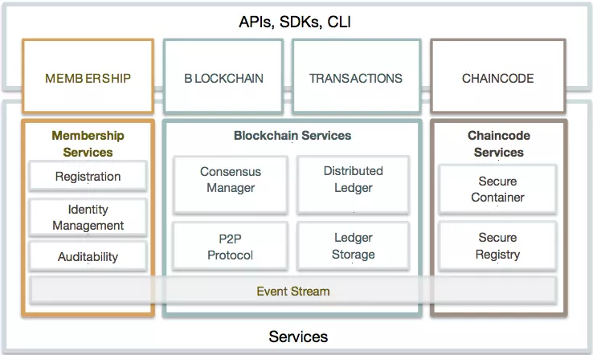
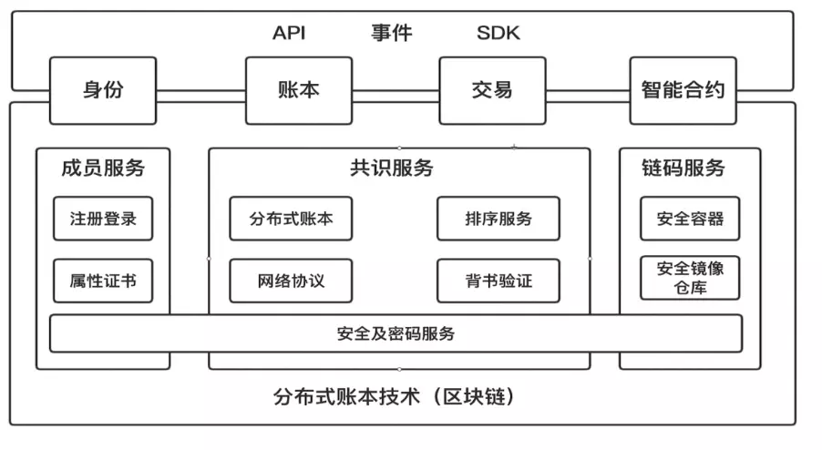

3. Hyperledger Fabric系统架构¶
功能架构如下图所示

从中可以看出包括三大组件：区块链服务（Blockchain）、链码服务（Chaincode）、成员权限管理（Membership）。
3.1. 区块链服务¶
区块链服务提供一个分布式账本平台。一般地，多个交易被打包进区块中，多个区块构成一条区块链。区块链代表的是账本状态机发生变更的历史过程。
交易¶
交易意味着围绕着某个链码进行操作。 交易可以改变世界状态。 交易中包括的内容主要有：
交易类型：目前包括 Deploy、Invoke、Query、Terminate 四种；
uuid：代表交易的唯一编号；
链码编号 chaincodeID：交易针对的链码；
负载内容的 hash 值：Deploy 或 Invoke 时候可以指定负载内容；
交易的保密等级 ConfidentialityLevel；
交易相关的 metadata 信息；
临时生成值 nonce：跟安全机制相关；
交易者的证书信息 cert；
签名信息 signature；
metadata 信息；
时间戳 timestamp。
交易的数据结构（Protobuf 格式）定义为
message Transaction {
enum Type {
UNDEFINED = 0;
// deploy a chaincode to the network and call `Init` function
CHAINCODE_DEPLOY = 1;
// call a chaincode `Invoke` function as a transaction
CHAINCODE_INVOKE = 2;
// call a chaincode `query` function
CHAINCODE_QUERY = 3;
// terminate a chaincode; not implemented yet
CHAINCODE_TERMINATE = 4;
}
Type type = 1;
//store ChaincodeID as bytes so its encrypted value can be stored
bytes chaincodeID = 2;
bytes payload = 3;
bytes metadata = 4;
string uuid = 5;
google.protobuf.Timestamp timestamp = 6;
ConfidentialityLevel confidentialityLevel = 7;
string confidentialityProtocolVersion = 8;
bytes nonce = 9;
bytes toValidators = 10;
bytes cert = 11;
bytes signature = 12;
}
区块¶
区块打包交易，确认交易后的世界状态。 一个区块中包括的内容主要有：
版本号 version：协议的版本信息；
时间戳 timestamp：由区块提议者设定；
交易信息的默克尔树的根 hash 值：由区块所包括的交易构成；
世界观的默克尔树的根 hash 值：由交易发生后整个世界的状态值构成；
前一个区块的 hash 值：构成链所必须；
共识相关的元数据：可选值；
非 hash 数据：不参与 hash 过程，各个 peer 上的值可能不同，例如本地提交时间、交易处理的返回值等；
注意具体的交易信息并不存放在区块中。 区块的数据结构（Protobuf 格式）定义为
message Block {
uint32 version = 1;
google.protobuf.Timestamp timestamp = 2;
repeated Transaction transactions = 3;
bytes stateHash = 4;
bytes previousBlockHash = 5;
bytes consensusMetadata = 6;
NonHashData nonHashData = 7;
}
一个真实的区块内容示例：
{
"nonHashData": {
"localLedgerCommitTimestamp": {
"nanos": 975295157,
"seconds": 1466057539
},
"transactionResults": [
{
"uuid": "7be1529ee16969baf9f3156247a0ee8e7eee99a6a0a816776acff65e6e1def71249f4cb1cad5e0f0b60b25dd2a6975efb282741c0e1ecc53fa8c10a9aaa31137"
}
]
},
"previousBlockHash": "RrndKwuojRMjOz/rdD7rJD/NUupiuBuCtQwnZG7Vdi/XXcTd2MDyAMsFAZ1ntZL2/IIcSUeatIZAKS6ss7fEvg==",
"stateHash": "TiIwROg48Z4xXFFIPEunNpavMxnvmZKg+yFxKK3VBY0zqiK3L0QQ5ILIV85iy7U+EiVhwEbkBb1Kb7w1ddqU5g==",
"transactions": [
{
"chaincodeID": "CkdnaXRodWIuY29tL2h5cGVybGVkZ2VyL2ZhYnJpYy9leGFtcGxlcy9jaGFpbmNvZGUvZ28vY2hhaW5jb2RlX2V4YW1wbGUwMhKAATdiZTE1MjllZTE2OTY5YmFmOWYzMTU2MjQ3YTBlZThlN2VlZTk5YTZhMGE4MTY3NzZhY2ZmNjVlNmUxZGVmNzEyNDlmNGNiMWNhZDVlMGYwYjYwYjI1ZGQyYTY5NzVlZmIyODI3NDFjMGUxZWNjNTNmYThjMTBhOWFhYTMxMTM3",
"payload": "Cu0BCAESzAEKR2dpdGh1Yi5jb20vaHlwZXJsZWRnZXIvZmFicmljL2V4YW1wbGVzL2NoYWluY29kZS9nby9jaGFpbmNvZGVfZXhhbXBsZTAyEoABN2JlMTUyOWVlMTY5NjliYWY5ZjMxNTYyNDdhMGVlOGU3ZWVlOTlhNmEwYTgxNjc3NmFjZmY2NWU2ZTFkZWY3MTI0OWY0Y2IxY2FkNWUwZjBiNjBiMjVkZDJhNjk3NWVmYjI4Mjc0MWMwZTFlY2M1M2ZhOGMxMGE5YWFhMzExMzcaGgoEaW5pdBIBYRIFMTAwMDASAWISBTIwMDAw",
"timestamp": {
"nanos": 298275779,
"seconds": 1466057529
},
"type": 1,
"uuid": "7be1529ee16969baf9f3156247a0ee8e7eee99a6a0a816776acff65e6e1def71249f4cb1cad5e0f0b60b25dd2a6975efb282741c0e1ecc53fa8c10a9aaa31137"
}
]
}
世界观¶
世界观用于存放链码执行过程中涉及到的状态变量，是一个键值数据库。典型的元素为 [chaincodeID, ckey]: value 结构。
为了方便计算变更后的 hash 值，一般采用默克尔树数据结构进行存储。树的结构由两个参数（numBuckets 和 maxGroupingAtEachLevel）来进行初始配置，并由 hashFunction 配置决定存放键值到叶子节点的方式。显然，各个节点必须保持相同的配置，并且启动后一般不建议变动。
numBuckets：叶子节点的个数，每个叶子节点是一个桶（bucket），所有的键值被 hashFunction 散列分散到各个桶，决定树的宽度；
maxGroupingAtEachLevel：决定每个节点由多少个子节点的 hash 值构成，决定树的深度。 其中，桶的内容由它所保存到键值先按照 chaincodeID 聚合，再按照升序方式组成。
一般地，假设某桶中包括M个 chaincodeID，对于chaincodeID_i，假设其包括 N 个键值对，则聚合G_i 内容可以计算为：
该桶的内容则为
3.2. 链码服务（智能合约）¶
链码包含所有的处理逻辑，并对外提供接口，外部通过调用链码接口来改变世界观。
1.接口和操作¶
链码需要实现 Chaincode 接口，以被 VP 节点调用。
type Chaincode interface {
Init(stub *ChaincodeStub, function string, args []string) ([]byte, error)
Invoke(stub *ChaincodeStub, function string, args []string) ([]byte, error)
Query(stub *ChaincodeStub, function string, args []string) ([]byte, error)
}
链码目前支持的交易类型包括：部署（Deploy）、调用（Invoke）和查询（Query）。
部署：VP 节点利用链码创建沙盒，沙盒启动后，处理 protobuf 协议的 shim 层一次性发送包含 ChaincodeID 信息的 REGISTER 消息给 VP 节点，进行注册，注册完成后，VP 节点通过 gRPC 传递参数并调用链码 Init 函数完成初始化；
调用：VP 节点发送 TRANSACTION 消息给链码沙盒的 shim 层，shim 层用传过来的参数调用链码的 Invoke 函数完成调用；
查询：VP 节点发送 QUERY 消息给链码沙盒的 shim 层，shim 层用传过来的参数调用链码的 Query 函数完成查询。 不同链码之间可能互相调用和查询。
2.容器¶
在实现上，链码需要运行在隔离的容器中，超级账本采用了 Docker 作为默认容器。 对容器的操作支持三种方法：build、start、stop，对应的接口为 VM。
type VM interface {
build(ctxt context.Context, id string, args []string, env []string, attachstdin bool, attachstdout bool, reader io.Reader) error
start(ctxt context.Context, id string, args []string, env []string, attachstdin bool, attachstdout bool) error
stop(ctxt context.Context, id string, timeout uint, dontkill bool, dontremove bool) error
}
链码部署成功后，会创建连接到部署它的 VP 节点的 gRPC 通道，以接受后续 Invoke 或 Query 指令。
3.gRPC 消息¶
VP 节点和容器之间通过 gRPC 消息来交互。消息基本结构为
message ChaincodeMessage {
enum Type {
UNDEFINED = 0;
REGISTER = 1;
REGISTERED = 2;
INIT = 3;
READY = 4;
TRANSACTION = 5;
COMPLETED = 6;
ERROR = 7;
GET_STATE = 8;
PUT_STATE = 9;
DEL_STATE = 10;
INVOKE_CHAINCODE = 11;
INVOKE_QUERY = 12;
RESPONSE = 13;
QUERY = 14;
QUERY_COMPLETED = 15;
QUERY_ERROR = 16;
RANGE_QUERY_STATE = 17;
}
Type type = 1;
google.protobuf.Timestamp timestamp = 2;
bytes payload = 3;
string uuid = 4;
}
当发生链码部署时，容器启动后发送 REGISTER 消息到 VP 节点。如果成功，VP 节点返回 REGISTERED 消息，并发送 INIT 消息到容器，调用链码中的 Init 方法。
当发生链码调用时，VP 节点发送 TRANSACTION 消息到容器，调用其 Invoke 方法。如果成功，容器会返回 RESPONSE 消息。
类似的，当发生链码查询时，VP 节点发送 QUERY 消息到容器，调用其 Query 方法。如果成功，容器会返回 RESPONSE 消息。
3.3. 成员权限管理¶
通过基于 PKI 的成员权限管理，平台可以对接入的节点和客户端的能力进行限制。
证书有三种，Enrollment，Transaction，以及确保安全通信的 TLS 证书。
注册证书 ECert：用于用户身份验证的注册证书，颁发给提供了注册凭证的用户或节点，一般长期有效；
交易证书 TCert：用于交易签名的交易证书，颁发给用户，控制每个交易的权限，一般针对某个交易，短期有效。
通信证书 TLSCert：加密传输的TSL证书，控制对网络的访问，并且防止窃听。

概念术语¶
Auditability（审计性）：在一定权限和许可下，可以对链上的交易进行审计和检查。
Block（区块）：代表一批得到确认的交易信息的整体，准备被共识加入到区块链中。
Blockchain（区块链）：由多个区块链接而成的链表结构，除了首个区块，每个区块都包括前继区块内容的 hash 值。
Certificate Authority（CA）：负责身份权限管理，又叫 Member Service 或 Identity Service。
Chaincode（链上代码或链码）：区块链上的应用代码，扩展自“智能合约”概念，支持 golang、nodejs 等，运行在隔离的容器环境中。
Committer（提交节点）：1.0 架构中一种 peer 节点角色，负责对 orderer 排序后的交易进行检查，选择合法的交易执行并写入存储。
Confidentiality（保密）：只有交易相关方可以看到交易内容，其它人未经授权则无法看到。
Endorser（背书节点）：1.0 架构中一种 peer 节点角色，负责检验某个交易是否合法，是否愿意为之背书、签名。
Enrollment Certificate Authority（ECA，注册 CA）：负责成员身份相关证书管理的 CA。
Ledger（账本）：包括区块链结构（带有所有的可验证交易信息，但只有最终成功的交易会改变世界观）和当前的世界观（world state）。Ledger 仅存在于 Peer 节点。
MSP（Member Service Provider，成员服务提供者）：成员服务的抽象访问接口，实现对不同成员服务的可拔插支持。
Non-validating Peer（非验证节点）：不参与账本维护，仅作为交易代理响应客户端的 REST 请求，并对交易进行一些基本的有效性检查，之后转发给验证节点。
Orderer（排序节点）：1.0 架构中的共识服务角色，负责排序看到的交易，提供全局确认的顺序。
Permissioned Ledger（带权限的账本）：网络中所有节点必须是经过许可的，非许可过的节点则无法加入网络。
Privacy（隐私保护）：交易员可以隐藏交易的身份，其它成员在无特殊权限的情况下，只能对交易进行验证，而无法获知身份信息。
Transaction（交易）：执行账本上的某个函数调用。具体函数在 chaincode 中实现。
Transactor（交易者）：发起交易调用的客户端。
Transaction Certificate Authority（TCA，交易 CA）：负责维护交易相关证书管理的 CA。
Validating Peer（验证节点、记账节点）：维护账本的核心节点，参与一致性维护、对交易的验证和执行。
World State（世界观）：是一个键值数据库，chaincode 用它来存储交易相关的状态。